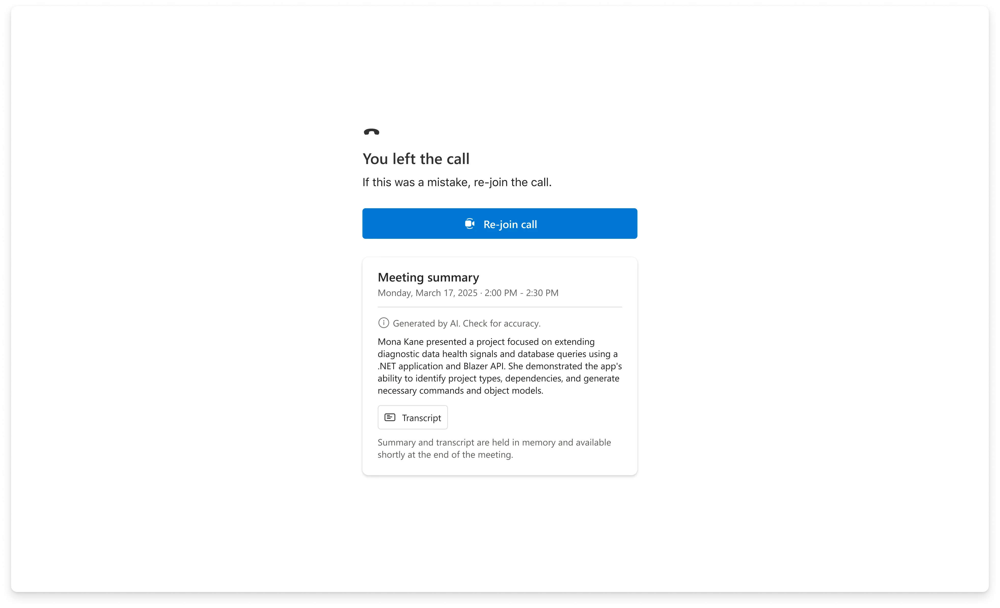
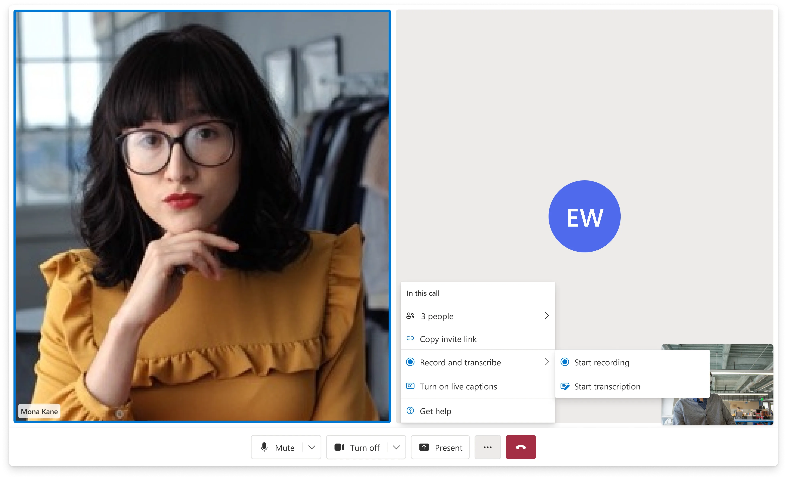
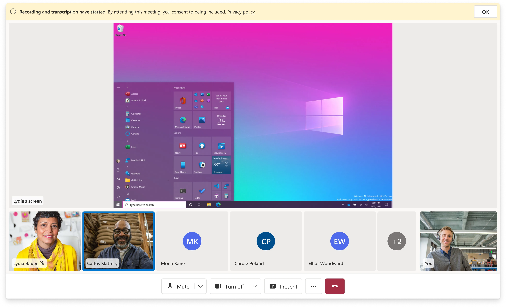

Transcription
& Call Summary

The challenge
The first AI feature in ACS had two design problems that weren't obvious from the outside. The first: the call ends before the summary is ready. Azure AI Speech converts speech to transcript in real time, but Azure AI Language's summarization runs after the call — there's a gap between "call ended" and "summary available." How do you design a post-call screen for a moment when the most important thing isn't there yet?
The second: a telehealth note, a financial consultation record, and an enterprise meeting summary are three different documents. They come from the same transcript. But what a physician needs to see at the top — symptoms, decisions, follow-up — is completely different from what a financial advisor needs. The summary structure had to serve radically different customers without becoming so generic it served none of them.
I designed the post-call screen, the loading state model, and the summary information hierarchy in Figma. Danielle Hibbs was the design partner on visual execution and the Sample Builder configuration UI.
The AI stack
Azure AI Speech
Converts speech to text in real time, with speaker attribution so the transcript knows who said what. Supports multilingual teams and post-meeting translation.
Azure AI Language
Runs on the completed transcript post-call, generating structured output: main discussion points, decisions made, and action items with next steps.
Sample Builder
No-code Azure Portal integration — developers configure transcription and summary as toggles, deploy to a Rooms-based calling experience without writing AI infrastructure code.
Design decisions
Enablement
Starting transcription mid-call without breaking the call
Transcription is opt-in — not automatically active, and not all customers want it enabled for all calls. The entry point lives in the call settings menu, which keeps it accessible without surfacing it as a default. When recording and transcription are active, the in-call state indicators confirm it's running — critical for compliance in regulated contexts where participants need to know they're being recorded.
Bringing AI to Meetings with the Sample Builder ↗

State Problem
Designing for the gap between "call ended" and "summary ready"
Azure AI Language's summarization runs post-call. There's a window — typically 15–30 seconds — where the transcript is finalizing and the summary hasn't generated yet. A user who hits "end call" has an immediate expectation: they're done with the call, they want to see what came from it. A blank screen with a spinner and no timeline is a trust problem. It communicates nothing about what's happening or when it will end.
I designed the post-call screen to show transcript lines as they finalize — speaker by speaker, as Azure AI Speech completes its attribution pass. Users have something real to read immediately. The summary section appears above the transcript once it's ready, sliding in without displacing the content already visible. You never see an empty page. The wait is productive rather than passive.
Hierarchy
Summary above transcript. Synthesis before record.
The transcript is the complete record — every word, speaker-attributed, searchable. The summary is the distillation — discussion points, decisions, action items. These serve two different needs at two different times: the summary is useful immediately after the call, the transcript is useful later when you need to verify something specific.
I structured the post-call view with the summary at the top, transcript below. This isn't just visual hierarchy — it's a position on what the primary job of this screen is. Most users, most of the time, want to quickly understand what happened and what comes next. The transcript is the safety net, not the entry point. The structure makes both accessible without forcing a choice.
The Azure AI Language output includes three structured sections: main discussion points, decisions made, and action items. I preserved that three-part structure in the summary view — it gives the output shape and scannability regardless of how long the call was or what domain it came from.
Delivery
Configurable through the Sample Builder — no AI infrastructure required
The Sample Builder packaged transcription and call summary as toggles in the Azure Portal wizard. A developer, PM, or field team member could enable AI call summary without writing a line of Azure AI SDK code — the Sample Builder wired up the Azure AI Speech and Azure AI Language integrations behind the scenes. This was the "5-minutes-to-wow" motion: pair the AI capability with a frictionless demo experience so customers and internal teams could see it working before committing to a production implementation.
I worked with design and DevRel on a Sample Builder walkthrough video to relaunch the builder on YouTube and anchor the Build conference demo for transcription and meeting summary.


Sample Builder walkthrough video produced for Build and YouTube relaunch.
Fit
The same transcript produces a different document in each vertical
Healthcare, financial services, and education were the three verticals I focused on when scoping what a "good summary" meant. For a telehealth appointment, the physician needs to see the patient's reported symptoms, what was decided, and what the follow-up instructions are — in that order. For a financial consultation, the advisor needs decisions made, account references, and compliance-relevant commitments. For an education context, the summary is more about accessibility — giving students a searchable record of a session.
Azure AI Language's three-part structure (discussion points → decisions → action items) maps reasonably well to all three scenarios, but the implementation left room for the Sample Builder to expose configuration options for what gets included and how it's labeled. This gave customers a path toward scenario-specific summaries without requiring the library to hard-code industry-specific logic.
Results
1st
First AI feature shipped in ACS — set the pattern for AI-enabled experiences in the platform and established the Sample Builder as the AI showcase layer.
Build
Shipped in preview at Microsoft Build alongside Azure AI and Nuance — the flagship demo of ACS's AI strategy for that conference cycle.
0 code
Azure AI Speech + Azure AI Language fully configurable through the Sample Builder wizard. The progressive reveal loading state meant the no-code experience felt immediate rather than broken — no blank screen during the summarization window.
3
Industry verticals the information hierarchy was validated against — healthcare, financial services, education. The three-section structure (discussion points → decisions → action items) maps to each without vertical-specific logic.
Pattern
Established the Sample Builder as the right surface to ship AI features before committing them to the production composite API. The design strategy — prove the UX model first, then decide what enters the library — carried into every AI feature that followed.
FY25Q1
Featured in the ACS quarterly newsletter as the "5-minutes-to-wow" motion — the summary structure and loading state design were specifically what made the Build demo work as a live showcase.